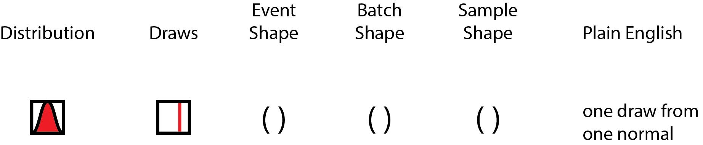
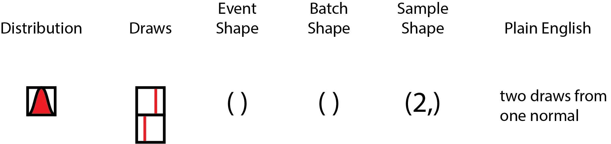
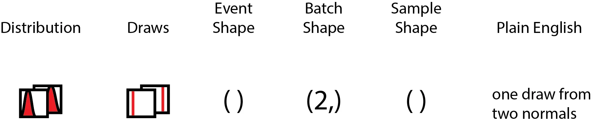
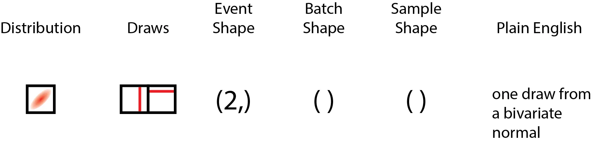
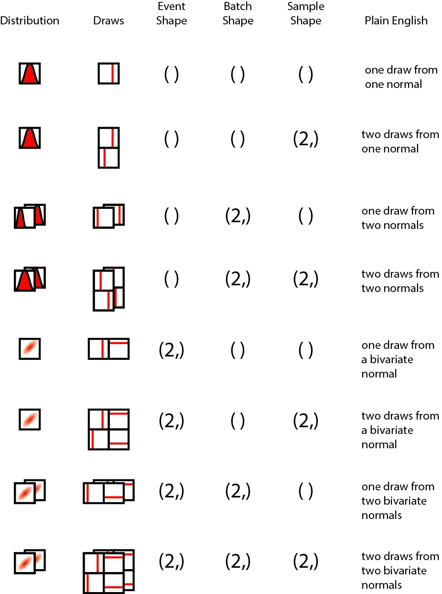
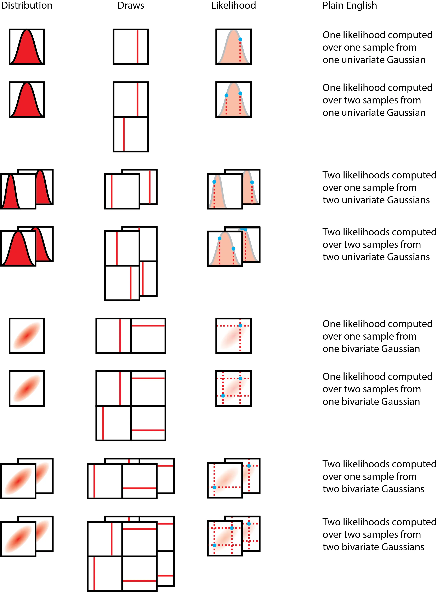

written by Eric J. Ma on 2019-05-29 | tags: bayesian probabilistic programming tensors data science probability distributions
I learned a ton hacking on PyMC4 with the TensorFlow Probability team in Montreal this year, particularly about probability distributions and semantic issues that we can run into with tensor shapes. If you’re curious, read on!
I’m here with the PyMC4 dev team and Tensorflow Probability developers Rif, Brian and Chris in Google Montreal, and have found the time thus far to be an amazing learning opportunity.
Prior to this summit, it never dawned on me how interfacing tensors with probability distributions could be such a minefield of overloaded ideas and terminology. Yet, communicating clearly about tensors is important, because if problems can be cast into a tensor-space operation, vectorization can help speed up many operations that we wish to handle. I wanted to share a bit about something new about tensors that I learned here: the different types of shapes involved in a probabilistic programming language.
Let’s start by thinking about a few questions involving the most venerable distribution of them all: the Gaussian, also known as the Normal distribution.
Let’s start by thinking about a single draw from a standard Gaussian. Drawing one number from the standard Gaussian yields a scalar. In tensor space, a scalar is a rank 0 tensor, and this colloquially means that there’s no dimensions involved. If we drew out the distribution, and drew out the process of drawing numbers from the distribution, it might look like the following:

The distribution we are drawing from is on the left, and a draw is represented by a line (on the same numerical axis as the probability distribution), and the event shape, batch shape and sample shape shown to their right, followed by a "plain English" description. Over the course of this blog post, the shape concepts will be disambiguated; sit tight and enjoy the ride!
What if we were to draw two numbers from this one Gaussian? We could use a vector with two slots to represent those draws. This might look like the following:

However, the elementary event of drawing a single number did not fundamentally change when we drew two numbers, as we merely repeated the same event to draw two. With my hands waving in the air, I will claim that this holds true even with K samples drawn from the distribution.
Now, what if I had a second Gaussian, say, with a different mean and/or variance? If I were to draw one number from the first Gaussian alongside one number from the second Gaussian, and then concatenate them into a vector, we can represent this as us drawing numbers from independent Gaussians. The illustration below should help clarify how this is different from the first.

In this case, we may argue that per distribution, the elementary shape of the event did not change. However, since we have a batch of two distributions, this contributes to the final shape of the tensor. Again, with much waving of my hands in the air, this should extend to more than two distributions.
Now, what if we had a multivariate Gaussian, with two variates? This makes for a very interesting case! The elementary event drawn from this multivariate Gaussian is a two-element vector, not a scalar, which means that its shape is apparently identical to the case where we have a single pair of numbers drawn from a batch of two independent Gaussians! This looks like the following:

This is interesting, because a single draw from a bivariate Gaussian has the same overall shape as two draws from one Gaussian, which also has the same shape as one draw from a batch of two Gaussians. Yet, these apparently same-shaped draws are shaped differently semantically! In particular, the two independent Gaussians individually have elementary event shapes that are scalar, but when drawn as a batch of two, that is when their shape of (2,) forms. On the other hand, the multivariate Gaussian cannot have its two numbers drawn independent of one another (unless this is the special case of diagonal-only covariance - in which case, this is equivalent to independent Gaussians). Hence, the elementary event shape is not scalar, but vector (or more generally, same rank tensor as the mean tensor), but the batch has only a single distribution, hence it has a scalar batch shape.
To summarize, here are the various kinds of shapes, defined:
Event shape: The atomic shape of a single event/observation from the distribution (or batch of distributions of the same family).
Batch shape: The atomic shape of a single sample of observations from one or more distributions of the same family. As an example, we can’t have a batch of a Gaussian and a Gamma distribution together, but we can have a batch of more than one Gaussians.
Sample shape: The shape of a bunch of samples drawn from the distributions.
And finally, here’s the full spread of possibilities, using one or two draws, uni- or bi-variate Gaussians, and one or two batches of distributions as an illustration.

Special thanks goes to fellow PyMC devs, Ravin Kumar, Brandon Willard, Colin Carroll, and Peadar Coyle, who provided feedback on the figure over a late-night tea/dinner/bar session at the end of Day 2.
Why do these different shapes matter? Well, it matters most when we are thinking about broadcasting in a semantically-consistent fashion, particularly when considering batches and events. When it comes to implementing a tensor library with probability distributions as first-class citizens, reasoning about these shapes properly can really help with implementing an API that end-users can grok in a reasonable fashion.
Let’s return to the simple case where we have two different types of shape (2,) Gaussians declared: a batch of two Gaussians, and a bivariate Gaussian. One useful thought experiment is to think about the computation of the log probability of a vector of two numbers, X = (x1, x2), where x1 and x2 are not necessarily the same numbers.
In the case of the bivariate Gaussians, how many log probabilities should we return? In this case, it makes semantic sense to return only one number, because in a bivariate Gaussian, the two numbers could not have been drawn independent of each other, and hence the log probability has to be computed with consideration to the full joint distribution.
In the case of the batch of two Gaussians, how many log probabilities should we return? Is it one number, or is it two? Semantically, it makes sense to return two numbers, because we are evaluating x1 against the first Gaussian, and x2 against the second Gaussian in the batch of Gaussians. Most crucially, this differs from the bivariate case, because by structuring our Gaussians in a batch, we are essentially declaring our intent to evaluate their log probabilities independent of each other.
Borrowing from the above master figure, here's the a figure that shows how likelihood computations happen:

To compute the likelihood over the data, we multiply the likelihoods of each of the individual data points (or since we're doing computation on a computer, we sum the log probabilities). You will noticed that essentially, in each case, the dimension we intend to collapse is the sample dimension - and that means keeping track of the sample dimension is extremely important! Also important to note is that we do not intend to collapse the batch dimension, as it does not carry the same statistical meaning as a sample from a distribution, but is a tensor computation construct.
There are more scenarios where reasoning about shapes in a semantic manner becomes super important! Here’s a sampling of them, posed as questions and then maybe some suggested answers or further questions.
If I now asked to evaluate the log probability of x1 only, how should broadcasting of x1 happen on the bivariate Gaussian, and on the batch of two Gaussians? Perhaps in this trivial case, it would be tempting to automatically broadcast the same scalar number... but wait! In the case of the bivariate Gaussian, how do we know that the end-user has not forgotten to supply the second number?
If I have a batch of two bivariate Gaussians, hence effectively creating a (batch shape = 2, event shape = 2) vector of bivariate distributions, and I ask to evaluate the log probability of a matrix of values ((x1, x2), (x3, x4)), in which way do we orient the values? Do we assume that (x1, x2) are to be evaluated against the first Gaussian, or (x1, x3) are to be evaluated against the first Gaussian? (We don’t have to worry about (x1, x4), because to the average user, it is unreasonable whichever way we look.)
Both these examples illustrate an inherent difficulty to thinking about tensor shapes without reference to what each of the dimensions mean.
What could we do, then, to improve the semantic understandability of tensor shapes?
One solution would be to name tensor axes by what they mean. The xarray project does exactly that! However, it can’t be used in differential computing, because (to the best of my knowledge), there is no automatic differentiation system that works with it.
In addition, there’s namedtensor from Harvard NLP that aims to provide an analogous solution to the problem, though I find it a pity that they chose to implement it against pytorch rather than to create an extension to the idiomatic numpy instead.
The TensorFlow Probability team also has a solution, in which they separate the three types of shapes explicitly, though no naming happens on a per-axis basis.
I think there are great ideas in all three, and when I take a birds-eye view of the scientific computing ecosystem in Python as both a developer and end-user, I’d love to see the NumPy API, which is idiomatic and widely used and built on top of, become aware of each of these types of designs, something akin to NEP-18, the array function dispatching protocol that allows NumPy APIs to be called on other tensor libraries.
@article{
ericmjl-2019-reasoning-about-shapes-and-probability-distributions,
author = {Eric J. Ma},
title = {Reasoning about Shapes and Probability Distributions},
year = {2019},
month = {05},
day = {29},
howpublished = {\url{https://ericmjl.github.io}},
journal = {Eric J. Ma's Blog},
url = {https://ericmjl.github.io/blog/2019/5/29/reasoning-about-shapes-and-probability-distributions},
}
I send out a newsletter with tips and tools for data scientists. Come check it out at Substack.
If you would like to sponsor the coffee that goes into making my posts, please consider GitHub Sponsors!
Finally, I do free 30-minute GenAI strategy calls for teams that are looking to leverage GenAI for maximum impact. Consider booking a call on Calendly if you're interested!